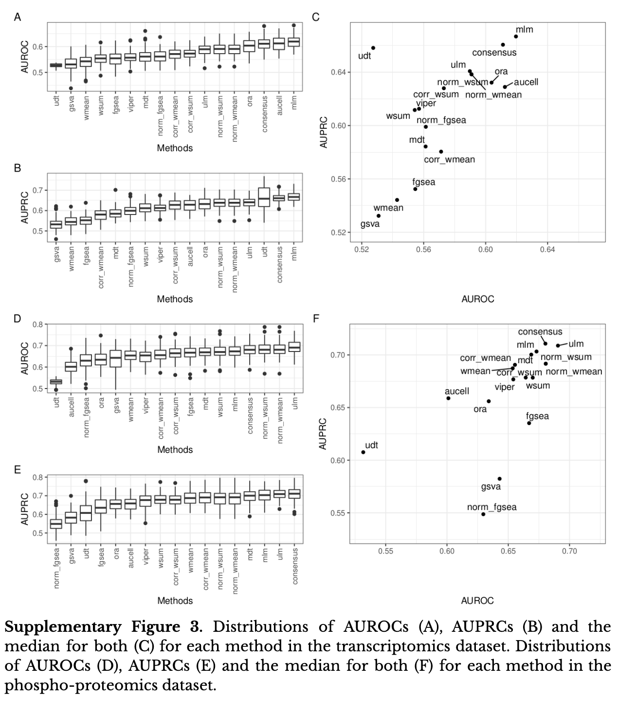
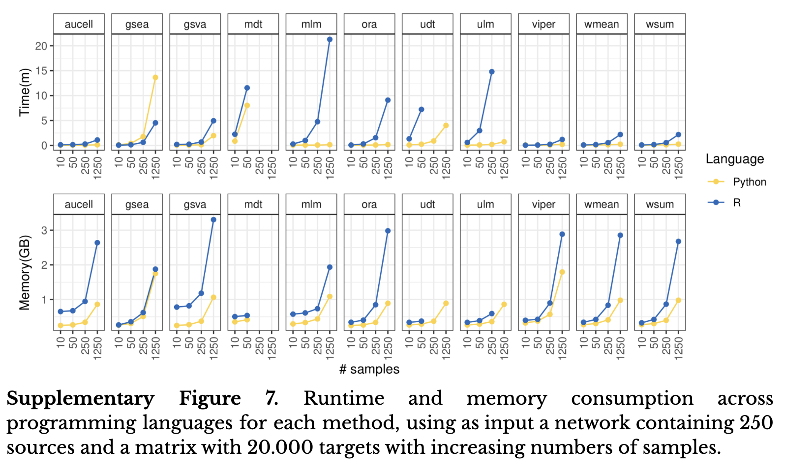

library(tidyverse)
library(Seurat)
# install tutorial data if it doesn't exist
if (!require("pbmc3k.SeuratData", character.only = TRUE))
install.packages(
"https://seurat.nygenome.org/src/contrib/pbmc3k.SeuratData_3.0.0.tar.gz",
repos = NULL,
type = "source")
library(pbmc3k.SeuratData)
# install.packages("BiocManager")
# BiocManager::install("decoupleR")
library(decoupleR)
# install.packages("DT")
library(DT)
# BiocManager::install("ComplexHeatmap")
library(ComplexHeatmap)
# Remember to set a seed so the analysis is reproducible!
set.seed(687)Gene Signatures - How to score & interpret
Introduction
Gene signatures are commonly used in routine single cell analysis. Many methods exists but they are not all created equallty. In this tutorial we are going to go follow a recent benchamrking paper (Badia-i-Mompel et al. (2022)) and follow their guidelines on best practices on how to compute and interpret these scores!
Before we start here are some key concepts that will help us and frame the vignette!
What is a gene signature?
A “gene signature” can be stated as a single or a group of genes in a cell having a unique pattern of gene expression that is the consequence of either changed biological process or altered pathogenic medical terms (Mallik and Zhao (2018)).
What is a cell type signature?
A cell type signature is a gene signature representing a group of genes underlying the biological processes characteristic of a cell type.
How do we score them in our dataset?
There are many ways to score gene signatures as shown in the
decoupleRpaper (Badia-i-Mompel et al. (2022)). However, they do not all perform the same and it is important to select a robust method. The suggested method after their benchmarking is running a Univariate Linear Model where the gene expression values are the response variable and the regulator weights in the gene signature are the explanatory one. The obtained t-value from the fitted model is the activity ulm of a given regulator.How do we interpret that score?
Scoring gene signatures using Univariate Linear Models and using the resulting t-value as the scoring metric allows us to simultaneously interpret in a single statistic the direction of activity (either + or -) and its significance (the magnitude of the score).
Libraries
Load the libraries and install the packages needed to run this notebook
Load data
For this purpose we are going to use the PBMC dataset from 10X Genomics here from the pbmc3k.SeuratData package.
pbmc3kAn object of class Seurat
13714 features across 2700 samples within 1 assay
Active assay: RNA (13714 features, 0 variable features)Analysis
Preprocessing
We will do a quick preprocessing of the data. 1) log-normalize, 2) identify highly variable genes, 3) scale their expression and 4) compute PCA on the scaled data.
pbmc3k <- pbmc3k %>%
NormalizeData(verbose = FALSE) %>%
FindVariableFeatures(nfeatures = 3000, verbose = FALSE) %>%
ScaleData(verbose = FALSE) %>%
RunPCA(verbose = FALSE)Next we check the elbow plot to determine the number of PCs to use for the downstream analysis and then compute UMAP, K-nearest neighbor graph (KNN graph) and run Louvain clustering on it.
# Look at elbow plot to assess the number of PCs to use
ElbowPlot(pbmc3k)
We can see a clear elbow at 10 PCs, we’re going to extend it a bit more and use 15 PCs for the downstream analysis to make sure we are not loosing any biological signal
pbmc3k <- RunUMAP(pbmc3k, reduction = "pca", dims = 1:15, verbose = FALSE)Warning: The default method for RunUMAP has changed from calling Python UMAP via reticulate to the R-native UWOT using the cosine metric
To use Python UMAP via reticulate, set umap.method to 'umap-learn' and metric to 'correlation'
This message will be shown once per sessionNext we compute the K-nearest-neighbor graph
pbmc3k <- pbmc3k %>%
FindNeighbors(verbose = FALSE) %>%
FindClusters(resolution = c(0.05, 0.1, 0.125, 0.15, 0.2), verbose = FALSE)
# Visualize the clustering on the UMAP
DimPlot(
pbmc3k,
group.by = c(
"RNA_snn_res.0.05", "RNA_snn_res.0.1", "RNA_snn_res.0.125",
"RNA_snn_res.0.15", "RNA_snn_res.0.2"))
For the purpose of this tutorial we are going to proceed with resolution 0.15
Idents(pbmc3k) <- pbmc3k$RNA_snn_res.0.15
(dim_plt <- DimPlot(
pbmc3k,
group.by = "RNA_snn_res.0.15") +
scale_color_brewer(palette = "Dark2"))
Gene Signature Scoring
Here we define some gene signatures based on prior knowledge
bcell <- c("MS4A1", "CD79A", "CD79B", "BANK1", "HLA-DQB1", "HLA-DQA1")
tcell <- c("CD3D", "CD3E", "TRAC", "TRBC1", "TRBC2", "CD4", "CD8A", "CD8B")
tnaive <- c(tcell, "IL7R", "CCR7", "TCF7", "LEF1", "SELL")
cd8cyto <- c(tcell, "GZMA", "GZMK", "NKG7", "CCL5")
mono <- c("FCGR3A", "CD14", "S100A9", "S100A8", "MS4A7")
nks <- c("NCR1", "NCR2", "NCR3", "FCGR3A", "GZMA", "GZMK", "NKG7", "CCL5")We can see how there are some genes that are specific for each signature but others are share between them. This is important to take into account when computing the gene signatures and interpreting their scores.
To help us compute these gene signatures we are going to use the R package decoupleR from Bioconductor. decoupleR is a great for carrying out these analysis since it is a framework that contains different statistical methods to compute these scores.
decoupleR requires the gene signatures to be passed as a dataframe so we are going to convert our gene signature vectors into a unified dataframe. mor stands for Mode Of Regulation, at the moment since we don’t have a score of how important that gene is for that signature we are going to weight them all equally with a value of 1.
sig_ls <- list("B cells" = bcell, "T cells" = tcell, "Naive T cells" = tnaive, "CD8 Cytotoxic" = cd8cyto, "Monocytes" = mono, "NKs" = nks)
sig_df <- lapply(names(sig_ls), function(i) {
data.frame(
signature = i,
gene = sig_ls[[i]],
mor = 1
)
}) %>% bind_rows()
sig_df signature gene mor
1 B cells MS4A1 1
2 B cells CD79A 1
3 B cells CD79B 1
4 B cells BANK1 1
5 B cells HLA-DQB1 1
6 B cells HLA-DQA1 1
7 T cells CD3D 1
8 T cells CD3E 1
9 T cells TRAC 1
10 T cells TRBC1 1
11 T cells TRBC2 1
12 T cells CD4 1
13 T cells CD8A 1
14 T cells CD8B 1
15 Naive T cells CD3D 1
16 Naive T cells CD3E 1
17 Naive T cells TRAC 1
18 Naive T cells TRBC1 1
19 Naive T cells TRBC2 1
20 Naive T cells CD4 1
21 Naive T cells CD8A 1
22 Naive T cells CD8B 1
23 Naive T cells IL7R 1
24 Naive T cells CCR7 1
25 Naive T cells TCF7 1
26 Naive T cells LEF1 1
27 Naive T cells SELL 1
28 CD8 Cytotoxic CD3D 1
29 CD8 Cytotoxic CD3E 1
30 CD8 Cytotoxic TRAC 1
31 CD8 Cytotoxic TRBC1 1
32 CD8 Cytotoxic TRBC2 1
33 CD8 Cytotoxic CD4 1
34 CD8 Cytotoxic CD8A 1
35 CD8 Cytotoxic CD8B 1
36 CD8 Cytotoxic GZMA 1
37 CD8 Cytotoxic GZMK 1
38 CD8 Cytotoxic NKG7 1
39 CD8 Cytotoxic CCL5 1
40 Monocytes FCGR3A 1
41 Monocytes CD14 1
42 Monocytes S100A9 1
43 Monocytes S100A8 1
44 Monocytes MS4A7 1
45 NKs NCR1 1
46 NKs NCR2 1
47 NKs NCR3 1
48 NKs FCGR3A 1
49 NKs GZMA 1
50 NKs GZMK 1
51 NKs NKG7 1
52 NKs CCL5 1ULM
ulm provides the analytical solution to norm_wmean if we could run the later with infinite iterations. As mentioned in the details of the function: “ULM fits a linear model for each sample and regulator, where the observed molecular readouts in mat are the response variable and the regulator weights in net are the explanatory one. Target features with no associated weight are set to zero. The obtained t-value from the fitted model is the activity ulm of a given regulator.”
Moreover, a nice thing about ulm (and norm_wmean) is that in a single statistic it provides the direction of activity (either + or -) and its significance (the magnitude of the score). Making the scores very easy to interpret!
ulm_start <- Sys.time()
res <- decoupleR::run_ulm(
mat = pbmc3k@assays$RNA@data,
network = sig_df,
.source = "signature",
.target = "gene",
.mor = "mor")
glue::glue("Time to run ulm is {round(difftime(Sys.time(), ulm_start, units = 's'), 0)} seconds")Time to run ulm is 24 secondsres# A tibble: 16,200 × 5
statistic source condition score p_value
<chr> <chr> <chr> <dbl> <dbl>
1 ulm B cells AAACATACAACCAC -0.556 5.78e- 1
2 ulm B cells AAACATTGAGCTAC 9.47 3.13e-21
3 ulm B cells AAACATTGATCAGC -0.678 4.98e- 1
4 ulm B cells AAACCGTGCTTCCG 2.17 2.97e- 2
5 ulm B cells AAACCGTGTATGCG -0.475 6.35e- 1
6 ulm B cells AAACGCACTGGTAC 2.61 9.18e- 3
7 ulm B cells AAACGCTGACCAGT -0.563 5.73e- 1
8 ulm B cells AAACGCTGGTTCTT -0.565 5.72e- 1
9 ulm B cells AAACGCTGTAGCCA 1.27 2.03e- 1
10 ulm B cells AAACGCTGTTTCTG 1.29 1.95e- 1
# ℹ 16,190 more rowsVisualization
We can directly add the ulm scores to an assay in our object and visualize the results
pbmc3k[['pathwaysulm']] <- res %>%
pivot_wider(
id_cols = 'source',
names_from = 'condition',
values_from = 'score') %>%
column_to_rownames('source') %>%
Seurat::CreateAssayObject(.)
# Change assay
DefaultAssay(object = pbmc3k) <- "pathwaysulm"
# Scale the data for comparison across signatures
pbmc3k <- ScaleData(pbmc3k)Centering and scaling data matrixpbmc3k@assays$pathwaysulm@data <- pbmc3k@assays$pathwaysulm@scale.dataUMAP visualization
Plot all the gene signatures one after the other
plt <- FeaturePlot(
pbmc3k,
features = rownames(pbmc3k@assays$pathwaysulm),
ncol = 3) &
scale_color_viridis_c(option = "magma")
plt + dim_plt
Heatmap by groups
We can also visualize the gene signature scores for each individual cell using a heatmap
DoHeatmap(
pbmc3k,
features = rownames(pbmc3k@assays$pathwaysulm),
slot = "data",
group.colors = RColorBrewer::brewer.pal(n = 7, name = "Dark2")) +
scale_fill_viridis_c(option = "viridis")Scale for fill is already present.
Adding another scale for fill, which will replace the existing scale.
From the plot above we can see how we have very distinct populations in our datasets. We can also look at it a bit less granular by looking at the mean activity score per cluster.
# Extract activities from object as a long dataframe
df <- t(as.matrix(pbmc3k@assays$pathwaysulm@data)) %>%
as.data.frame() %>%
mutate(cluster = pbmc3k$RNA_snn_res.0.15) %>%
pivot_longer(cols = -cluster, names_to = "source", values_to = "score") %>%
group_by(cluster, source) %>%
summarise(mean = mean(score))`summarise()` has grouped output by 'cluster'. You can override using the
`.groups` argument.# Transform to wide matrix
top_acts_mat <- df %>%
pivot_wider(id_cols = 'cluster', names_from = 'source',
values_from = 'mean') %>%
column_to_rownames('cluster') %>%
as.matrix()
# Choose color palette
palette_length = 100
my_color = colorRampPalette(c("Darkblue", "white","red"))(palette_length)
# Show which is the max and min of the scaled value to make sure we set a scale that makes sense
glue::glue("Note that the maximum scaled value is: {round(max(top_acts_mat), 2)}, and the minimum is {round(min(top_acts_mat), 2)}.")Note that the maximum scaled value is: 2.41, and the minimum is -1.05.my_breaks <- c(seq(-2, 0, length.out=ceiling(palette_length/2) + 1),
seq(0.05, 2, length.out=floor(palette_length/2)))
# Plot
ComplexHeatmap::pheatmap(top_acts_mat, border_color = NA, color=my_color, breaks = my_breaks)
Heatmap for gene expression
To fully grasp which genes are driving each gene signature we want to visualize the gene expression of each gene by each cell in each signature. We can do so using the ComplexHeatmap package and a little bit of data processing. For ease here is a function you can incorporate in your analysis:
geneHM <- function(
object,
sig_df,
sig_name,
sig_assay,
.source,
.target,
sig_slot = "data",
expr_assay = "RNA",
expr_slot = "data",
grouping = NULL,
grouping_color = NULL,
expr_cols = viridisLite::magma(100)) {
# Extract Gene Expression Matrix from Seurat Object
gene_expr <- GetAssayData(object, assay = expr_assay, slot = expr_slot)
# Subset the genes of the signature from the Gene Expression Matrix
genes_of_interest <- sig_df[, .target][which(sig_df[, .source] %in% sig_name)]
# Subset the genes intersecting between gene expression and genes in signature
g_int <- intersect(rownames(gene_expr), genes_of_interest)
if (length(g_int) < length(genes_of_interest)) {
genes_excluded <- genes_of_interest[!genes_of_interest %in% rownames(gene_expr)]
genes_excluded <- paste(genes_excluded, collapse = ", ")
message(paste0(
"Genes ", genes_excluded,
" are in the gene signature but not in the expression matrix,",
" therefore, they have been excluded."))
}
# Subset expression matrix to only genes of interest
gene_expr <- gene_expr[g_int, ]
# Extract the Scores of the Signature of interest
sig_score <- GetAssayData(object, assay = sig_assay, slot = sig_slot)
sig_vec <- sig_score[sig_name, ]
anno <- data.frame(score = sig_vec)
# Make sure they are in the right order
anno <- anno[colnames(gene_expr), , drop = FALSE]
# Add any metadata if specified
if (!is.null(grouping)) {
meta <- object@meta.data[, grouping, drop = FALSE]
anno <- cbind(anno, meta[rownames(anno), , drop = FALSE])
}
if (any(is.infinite(c(anno$score))))
stop("There are scores with Inf values, please address this outside of this function. It could be because the slot used is scale_data.")
# Make list of color to paint the annotation columns
if (!is.null(grouping) & !is.null(grouping_color)) {
score <- circlize::colorRamp2(
breaks = c(min(anno$score), 0, max(anno$score)),
colors = c("blue", "white", "red"))
color_ls <- append(grouping_color, score)
names(color_ls)[length(color_ls)] <- "score"
} else {
color_ls <- list(
score = circlize::colorRamp2
(breaks = c(min(anno$score), 0, max(anno$score)),
colors = c("blue", "white", "red")),
RNA_snn_res.0.15 = clust_color)
}
# Set the order from most expressing to least expressing
ord <- rownames(anno[order(anno$score, decreasing = TRUE), ])
# Add the score of the signature as annotation in the heatmap
colAnn <- HeatmapAnnotation(
df = anno[ord, , drop = FALSE],
which = 'column',
col = color_ls)
# Visualize the Heatmap with the genes and signature
ht <- Heatmap(
as.matrix(gene_expr[, ord]),
name = "Gene Expression",
col = expr_cols,
cluster_rows = TRUE,
cluster_columns = TRUE,
column_title = sig_name,
column_names_gp = gpar(fontsize = 14),
show_column_names = FALSE,
top_annotation = colAnn)
# Return ComplexHeatmap
draw(ht)
}
# Define colors for the grouping variable
clust_color <- RColorBrewer::brewer.pal(
length(unique(pbmc3k$RNA_snn_res.0.15)),
name = "Dark2")
names(clust_color) <- levels(pbmc3k$RNA_snn_res.0.15)
# Visualize the heatmaps for all signatures
tt <- lapply(unique(sig_df$signature), function(i) {
geneHM(
object = pbmc3k,
sig_df = sig_df,
.source = "signature",
.target = "gene",
sig_name = i,
expr_slot = "data",
expr_assay = "RNA",
sig_assay = "pathwaysulm",
sig_slot = "data",
grouping = c("RNA_snn_res.0.15"),
grouping_color = list(RNA_snn_res.0.15 = clust_color))
})Genes TRAC, TRBC1, TRBC2 are in the gene signature but not in the expression matrix, therefore, they have been excluded.
Genes TRAC, TRBC1, TRBC2 are in the gene signature but not in the expression matrix, therefore, they have been excluded.
Genes TRAC, TRBC1, TRBC2 are in the gene signature but not in the expression matrix, therefore, they have been excluded.

Genes NCR2 are in the gene signature but not in the expression matrix, therefore, they have been excluded.

Here are some examples of how to interpret these gene signatures:
In the Monocyte signature not all cells that have the same score have the same genes expressed. For example, wee can see how among the cells with high scores there are cells that express CD14 with a gradient switching to expression of FCGR3A. Therefore, classifying all of these cells as the same just because the gene signature scoring returns the same value would be a mistake. In this case, a likely scenario could be that the gene signature isn’t teasing out differences between classical, intermediate, and non-classical monocytes.
When looking at the CD8 Cytotoxic compartment we also observe how NK cells have a high score despite not expressing CD3 genes. This can be due to the higher expression of NKG7 i NKs vs CD8 T cells for example.
This is more of a dummy example but when assessing the T cell signature
c("CD3D", "CD3E", "TRAC", "TRBC1", "TRBC2", "CD4", "CD8A", "CD8B")CD8 T cells have a higher score than CD4 T cells. This is due to there being two CD8 genes (A & B) as well as CD8B being expressed at higher levels than CD4. Therefore, we need to keep an eye on these things to better interpret the heterogeneity within our populations.
Extra!
In the above example we showed how to compute signature scores using ulm, if we take a closer look to the original decoupleR paper (badia-i-mompel 2022) we can see how in Supplementary Figure 3 ulm and mlm slightly outperform norm_wmean in terms of AUROC and AUPRC. Moreover, in the Bioconductor Vignettes they showcase the use of run_wmean instead of ulm. So… why use ulm instead of norm_wmean?

The differences in performance between ulm and norm_wmean is very small, as they are consistently in the top 3 performing methods. These results are also shown in Supplementary Table 3 where mlm, ulm, and norm_wmean have a median AUC in their benchmarking pipeline of 0.67, 0.66 and 0.65 respectively. In terms of their computational efficiency measured in time and memory consumption mlm really scales poorly with the number of cells and samples as we can see in Supplementary Figure 7 while ulm does slightly better. We can also observe how wmean is clearly one of the most efficient tools, but this doesn’t take into account the permutations needed to compute norm_wmean. In practice, and after consulting with the developers here ulm has the double benefit of providing the analytical solution and being much more computational efficient than computing permutations to obtain the norm_wmean score.

Run norm_wmean
In this section we are going to show how computing the normalized weighted mean with 100 permutations provides a very similar result to the ulm but takes much longer!.
Run decouple on our data using the wmean method. As mentioned in the details of the function: “WMEAN infers regulator activities by first multiplying each target feature by its associated weight which then are summed to an enrichment score wmean. Furthermore, permutations of random target features can be performed to obtain a null distribution that can be used to compute a z-score norm_wmean, or a corrected estimate corr_wmean by multiplying wmean by the minus log10 of the obtained empirical p-value.”.
wmean_start <- Sys.time()
res_wmean <- decoupleR::run_wmean(
mat = pbmc3k@assays$RNA@data,
network = sig_df,
.source = "signature",
.target = "gene",
.mor = "mor",
times = 1000)
glue::glue("Time to run norm_wmean with 1000 iterations is {round(difftime(Sys.time(), wmean_start, units = 's'), 0)} seconds")Time to run norm_wmean with 1000 iterations is 90 secondsres_wmean# A tibble: 48,600 × 5
statistic source condition score p_value
<chr> <chr> <chr> <dbl> <dbl>
1 corr_wmean B cells AAACATACAACCAC 0 0.576
2 corr_wmean B cells AAACATTGAGCTAC 5.74 0.002
3 corr_wmean B cells AAACATTGATCAGC 0 0.84
4 corr_wmean B cells AAACCGTGCTTCCG 0.549 0.13
5 corr_wmean B cells AAACCGTGTATGCG 0 0.422
6 corr_wmean B cells AAACGCACTGGTAC 0.807 0.064
7 corr_wmean B cells AAACGCTGACCAGT 0 0.59
8 corr_wmean B cells AAACGCTGGTTCTT 0 0.644
9 corr_wmean B cells AAACGCTGTAGCCA 0.297 0.152
10 corr_wmean B cells AAACGCTGTTTCTG 0.294 0.172
# ℹ 48,590 more rowsWe obtain a long format tibble containing:
statistic - Indicating which method is associated with each score
wmean: multiplying each target feature by its associated weight which then are summed to an enrichment score
norm_wmean: permutations of random target features can be performed to obtain a null distribution that can be used to compute a z-score
norm_wmeancorr_wmean: corrected estimate by multiplying
wmeanby the minus log10 of the obtained empirical p-value
source (aka - signature name)
condition - cell barcode
score - the signature score, the inferred biological activity.
p_value - P value obtained from permutations
Compare ulm with norm_wmean scores
res2 <- res %>%
dplyr::select(statistic, source, score, condition)
colnames(res2) <- glue::glue("{colnames(res2)}_ulm")
res_wmean2 <- res_wmean %>%
dplyr::filter(statistic == "norm_wmean") %>%
dplyr::select(statistic, source, score, condition)
colnames(res_wmean2) <- glue::glue("{colnames(res_wmean2)}_wmean")
res2 %>%
left_join(
res_wmean2,
by = c("condition_ulm" = "condition_wmean", "source_ulm" = "source_wmean")) %>%
ggplot(aes(x = score_ulm, y = score_wmean)) +
geom_point() +
facet_wrap(~source_ulm, scales = "free") +
stat_smooth(method = "lm", formula = y ~ x, geom = "smooth") +
ggpubr::stat_cor(method = "pearson") +
labs(x = "ulm", y = "norm_wmean") +
theme_minimal()
References
Badia-i-Mompel, Pau, Jesús Vélez Santiago, Jana Braunger, Celina Geiss, Daniel Dimitrov, Sophia Müller-Dott, Petr Taus, et al. 2022. “decoupleR: Ensemble of Computational Methods to Infer Biological Activities from Omics Data.” Edited by Marieke Lydia Kuijjer. Bioinformatics Advances 2 (1). https://doi.org/10.1093/bioadv/vbac016.
Mallik, Saurav, and Zhongming Zhao. 2018. “Identification of Gene Signatures from RNA-Seq Data Using Pareto-Optimal Cluster Algorithm.” BMC Systems Biology 12 (S8). https://doi.org/10.1186/s12918-018-0650-2.